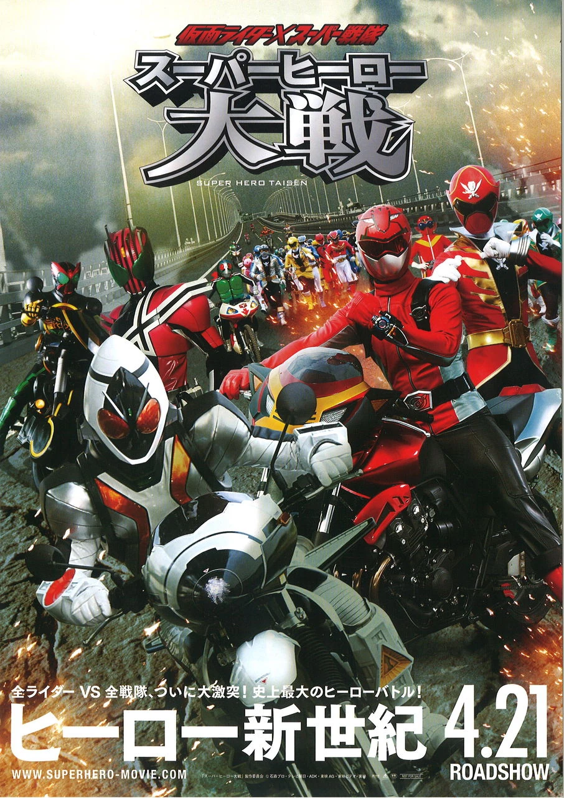

A trama acompanha um conflito sem precedentes quando o Capitão Marvelous (Gokai Red) assume o comando do império espacial Dai-Zangyack e inicia uma caçada implacável para destruir todos os Kamen Riders. Em resposta, Tsukasa Kadoya (Kamen Rider Decade) assume a liderança da organização criminosa Dai-Shocker, mobilizando forças para erradicar as equipes Super Sentai.Enquanto os heróis sobreviventes tentam entender a repentina hostilidade de seus antigos aliados, uma guerra generalizada eclode entre as duas facções.
Para mais informações, clique no link abaixo!!!
https://www.imdb.com/pt/title/tt2210717/?ref_=ttpl_ov_bk